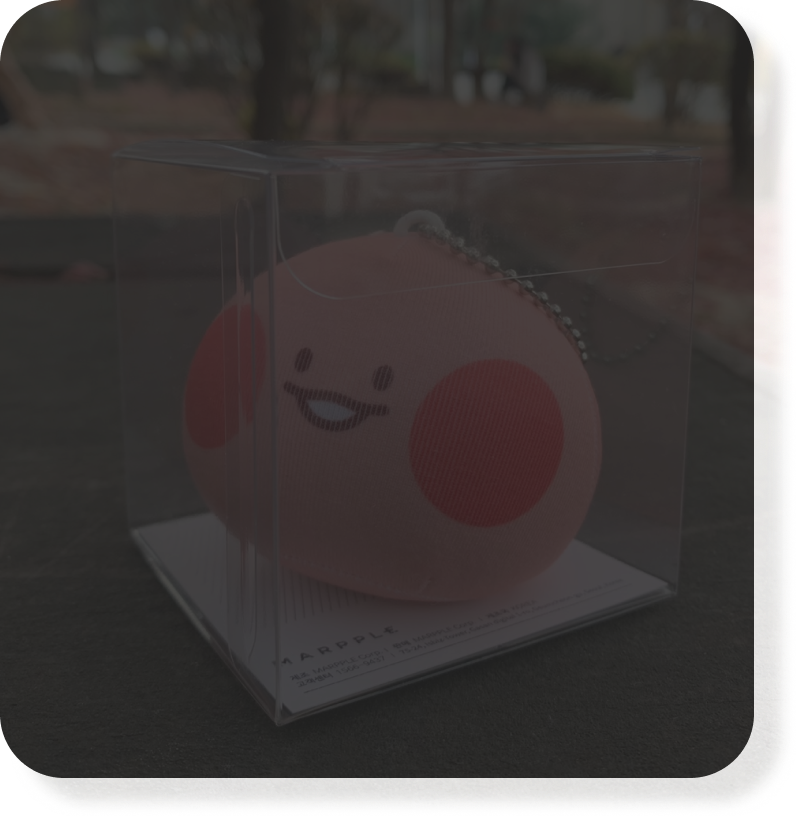
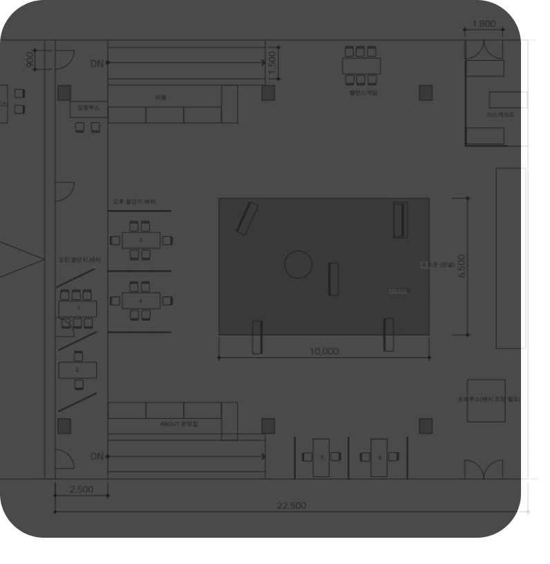
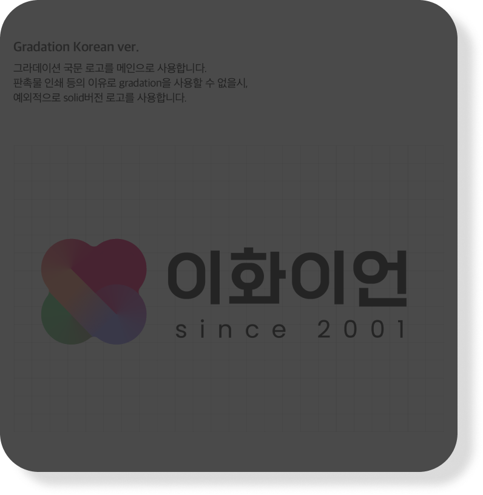

상호 피드백을 통한 퀄리티 있는 작업물
포트폴리오화 가능한 실무 경험
회사에 들어가면 특정행사, 아이템에 맞춰 디자인을 하게 되는데 이화이언에서는 간접적으로 가이드를 잘 활용하여 원하는 결과물을 도출해내는
능력을 기르게 되고 다수의 운영진의 피드백을 바탕으로 실무 업무 프로세스 방식을 배울 수 있습니다.
이는 더욱 매력적인 작업물을 담고 있는 유의미한 포트폴리오로 이어지기도 한답니다.

 